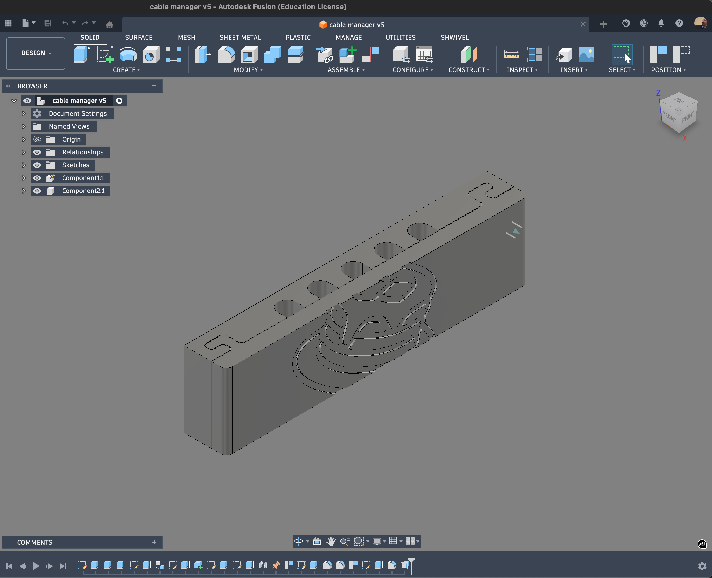

Final design update
I finished the cable organizer model and this version includes integrated magnets so it snaps cleanly into place. The part is designed to hold up to 5 cables while keeping the profile compact and desk-friendly.
Key features
- Integrated magnetic mounting for quick snap-in placement.
- 5 cable slots for charging and accessory cable management.
- Simple two-piece print geometry with clean edges.
- Short print time of about 1.5 hours.
CAD preview

Reflection
The main trade-off was balancing holding strength and print speed. I kept the geometry straightforward so the part stays fast to print while still improving daily usability through magnetic placement and better cable organization.
This is a private blog for course notes and reflections. Content is not indexed or publicly listed.